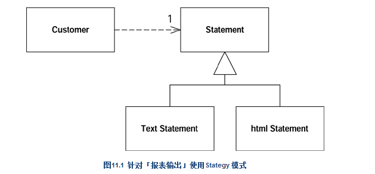

判断若干值域是否重复，惟一的办法就是观察函数如何使用它们。如果它们被使用的方式很相似，你就可以将它们归纳到superclass 去。
本项重构从两方面减少重复：首先它去除了「重复的数据声明」；其次它使你可以将使用该值域的行为从subclass 移至superclass，从而去除「重复的行为」。
如果某个函数在各subclass 中的函数体都相同（它们很可能是通过「拷贝-粘贴」得到的），这就是最显而易见的Pull Up Method 适用场合。当然，情况并不总是如此明显。你也可以只管放心地重构，再看看测试程序会不会发牢骚，但这就需要对你的测试有充分的信心。我发现，观察这些可疑（可能重复的〕函数之间的差异往往大有收获：它们经常会向我展示那些我忘记测试的行为。
Pull Up Method 常常紧随其他重构而被使用。也许你能找出若干个「身处不 同subclasses 内的函数」而它们又可以「通过某种形式的参数调整」而后成为相同函数。这时候，最简单的办法就是首先分别调整这些函数的参数，然后再将它们概括（generalize）到superclass中。当然，如果你自信足够，也可以一次同时完成这两个步骤。
// 两个subclass 都有一个createBill() 函数，并且代码完全一样：
void createBill (date Date) {
double chargeAmount = charge (lastBillDate, date);
addBill (date, charge);
}
重构后的代码：
//但我不能直接把这个函数上移到superclass
//因为各个subclass 的chargeFor() 函数并不相同。
//我必须先在superclass 中声明chargeFor() 抽象函数：
class Customer...
abstract double chargeFor(date start, date end)
如果你看见各个subclass 中的函数有共同行为，你的第一个念头应该是将共同行为提炼到一个独立函数中，然后将这个函数提升到superclass 。对构造函数而言，它们彼此的共同行为往往就是「对象的建构」。这时候你需要在superclass 中提供一个构造函数，然后让subclass 都来调用它。很多时候，「调用superclass 构造函数」就是subclass 构造函数的惟一动作。这里不能运用Pull Up Method，因为你无法在subclass 中继承superclass 构造函数（你可曾痛恨过这个规定？）。
class Employee...
protected String _name;
protected String _id;
class Manager extends Employee...
public Manager (String name, String id, int grade) {
_name = name;
_id = id;
_grade = grade;
}
private int _grade; class Employee
protected Employee (String name, String id) {
_name = name;
_id = id;
}
public Manager (String name, String id, int grade) {
super (name, id);
_grade = grade;
} class Employee...
boolean isPriviliged() {..}
void assignCar() {..}
class Manager...
public Manager (String name, String id, int grade) {
super (name, id);
_grade = grade;
if (isPriviliged()) assignCar(); //every subclass does this
}
boolean isPriviliged() {
return _grade > 4;
}移到superClass中
class Employee...
void initialize() {
if (isPriviliged()) assignCar();
}
class Manager...
public Manager (String name, String id, int grade) {
super (name, id);
_grade = grade;
initialize();
}Push Down Method 恰恰相反于 Pull Up Method 。当我有必要把某些行为从superclass 移至特定的subclass 时，我就使用Push Down Method，它通常也只在这种时候有用。使用Extract Subclass 之后你可能会需要它。
Push Down Field 恰恰相反 Pull Up Field。如果只有某些（而非全部）subclasses 需要superclass 内的一个值域，你可以使用本项重构。
class JobItem ...
public JobItem (int unitPrice, int quantity, boolean isLabor, Employee employee) {
_unitPrice = unitPrice;
_quantity = quantity;
_isLabor = isLabor;
_employee = employee;
}
public int getTotalPrice() {
return getUnitPrice() * _quantity;
}
public int getUnitPrice(){
return (_isLabor) ?
_employee.getRate():
_unitPrice;
}
public int getQuantity(){
return _quantity;
}
public Employee getEmployee() {
return _employee;
}
private int _unitPrice;
private int _quantity;
private Employee _employee;
private boolean _isLabor;
class Employee...
public Employee (int rate) {
_rate = rate;
}
public int getRate() {
return _rate;
}
private int _rate;
//调用
JobItem j1 = new JobItem (0, 5, true, kent);重构后的代码：
提炼出一个LaborItem subclass，因为上述某些行为和数据只在labor (劳工） 情况下才需要。首先建立这样一个class：
class LaborItem extends JobItem {}
//构造函数
public LaborItem (int unitPrice, int quantity, boolean isLabor, Employee employee) {
super (unitPrice, quantity, isLabor, employee);
}
//调用
JobItem j1 = new LaborItem (0, 5, true, kent);
class JobItem...
//修饰符变成protected
protected JobItem (int unitPrice, int quantity, boolean isLabor, Employee employee) {
_unitPrice = unitPrice;
_quantity = quantity;
_isLabor = isLabor;
_employee = employee;
}
public JobItem (int unitPrice, int quantity) {
this (unitPrice, quantity, false, null)
}
class JobItem...
protected Employee _employee;
//让_employee 只在「即将去达的subclass 中」被初始化：
class JobItem...
protected JobItem (int unitPrice, int quantity, boolean isLabor) {
_unitPrice = unitPrice;
_quantity = quantity;
_isLabor = isLabor;
}
class LaborItem ...
public LaborItem (int quantity, Employee employee) {
super (0, quantity, true);
_employee = employee;
}
//「多态常量函数」会在不同的subclass 实现版本中返回不同的固定值：
class JobItem...
protected boolean isLabor() {
return false;
}
class LaborItem...
protected boolean isLabor() {
return true;
}摆脱isLabor值域
class JobItem...
public int getUnitPrice(){
return (isLabor()) ?
_employee.getRate():
_unitPrice;
}
//将它重构为：
class JobItem...
public int getUnitPrice(){
return _unitPrice;
}
class LaborItem...
public int getUnitPrice(){
return _employee.getRate();
}重复代码是系统中最主要的一种糟糕东西。如果你在不同的地方进行相同一件事 情，一旦需要修改那些动作时，你就得负担比你原本应该负担的更多事情。
重复代码的某种形式就是：两个classes 以相同的方式做类似的事情，或者以不同的方式做类似的事情。对象提供了一种简化这种情况的机制，那就是继承机制。但是，在建立这些具有共通性的classes 之前，你往往无法发现这样的共通性，因此你经常会在「具有共通性」的classes 存在之后，再幵始建立其间的继承结构。
另一种选择就是Extract Class。这两种方案之间的选择其实就是继承（Inheritance ）和委托（delegation）之间的选择。如果两个classes 可以共享行为， 也可以共享接口，那么继承是比较简单的作法。如果你选错了，也总有 Replace Inheritance with Delegation 这瓶后悔药可吃。
class Employee...
public Employee (String name, String id, int annualCost) {
_name = name;
_id = id;
_annualCost = annualCost;
}
public int getAnnualCost() {
return _annualCost;
}
public String getId(){
return _id;
}
public String getName() {
return _name;
}
private String _name;
private int _annualCost;
private String _id;
//这里有两处共同点。首先，员工和部门都有名称（names）；
//其次，它们都有年度成本（annual costs），只不过计算方式略有不同。
//我要提炼出一个superclass ，用以包容这些共通特性。
//第一步是新建这个superclass ，并将现有的两个classes 定义为其subclasses：
public class Department...
public Department (String name) {
_name = name;
}
public int getTotalAnnualCost(){
Enumeration e = getStaff();
int result = 0;
while (e.hasMoreElements()) {
Employee each = (Employee) e.nextElement();
result += each.getAnnualCost();
}
return result;
}
public int getHeadCount() {
return _staff.size();
}
public Enumeration getStaff() {
return _staff.elements();
}
public void addStaff(Employee arg) {
_staff.addElement(arg);
}
public String getName() {
return _name;
}
private String _name;
private Vector _staff = new Vector();重构后的代码：
abstract class Party {}
class Employee extends Party...
class Department extends Party...
//继承父类的构造函数
class Party...
protected Party (String name) {
_name = name;
}
private String _name;
class Employee...
public Employee (String name, String id, int annualCost) {
super (name);
_id = id;
_annualCost = annualCost;
}
class Department...
public Department (String name) {
super (name);
}
//可以在superclass Party中声明一个抽象函数：
abstract public int getAnnualCost()
//转而使用新的superclass
class Department...
public int getAnnualCost(){
Enumeration e = getStaff();
int result = 0;
while (e.hasMoreElements()) {
Party each = (Party) e.nextElement();
result += each.getAnnualCost();
}
return result;
}
如果某个class 在不同环境下扮演截然不同的角色，使用interface （接口）就是个好主意。你可以针对每个角色以Extract Interface 提炼出相应接口。另一种可以用上Extract Interface 的情况是：你想要描述一个class 的外驶接口（outbound interface ），亦即这个class 对其server 所进行的操作〉。如果你打算将来加入其他种类的server ，只需要求它们实现这个接口即可。
double charge(Employee emp, int days) {
int base = emp.getRate() * days;
if (emp.hasSpecialSkill())
return base * 1.05;
else return base;
}重构后的代码：
interface Billable {
public int getRate();
public boolean hasSpecialSkill();
}
class Employee implements Billable ...
double charge(Billable emp, int days) {
int base = emp.getRate() * days;
if (emp.hasSpecialSkill())
return base * 1.05;
else return base;
}
如果你曾经编写过继承体系，你就会知道，继承体系很容易变得过分复杂。所谓重构继承体系，往往是将函数和值域在体系中上下移动。完成这些动作后，你 很可能发现某个subclass 并未带来该有的价值，因此需要把classes 并合（折叠）起来。
继承是「避免重复行为」的一个强大工具。无论何时，只要你看见两个subclasses 之中有类似的函数，就可以把它们提升到superclass 。但是如果这些函数并不完全相同呢？此时的你应该怎么办？我们仍有必要尽量避免重复，但又必须保持这些函 数之间的实质差异。
常见的一种情况是：两个函数以相同序列（sequence）执行大致相近的措施，但是各措施不完全相同。这种情况下我们可以将「执行各措施」的序列移至superclass ， 并倚赖多态（polymorphism ）保证各措施仍得以保持差异性。这样的函数被称为Template Method （模板函数）[Gang of Four]。
public String statement() {
Enumeration rentals = _rentals.elements();
String result = "Rental Record for " + getName() + "\n";
while (rentals.hasMoreElements()) {
Rental each = (Rental) rentals.nextElement();
//show figures for this rental
result += "\t" + each.getMovie().getTitle()+ "\t" +
String.valueOf(each.getCharge()) + "\n";
}
//add footer lines
result += "Amount owed is " + String.valueOf(getTotalCharge()) + "\n";
result += "You earned " + String.valueOf(getTotalFrequentRenterPoints()) +
" frequent renter points";
return result;
}
//函数htmlStatement() 则以HTML 格式输出报表：
public String htmlStatement() {
Enumeration rentals = _rentals.elements();
String result = "<H1>Rentals for <EM>" + getName() + "</EM></H1><P>\n";
while (rentals.hasMoreElements()) {
Rental each = (Rental) rentals.nextElement();
//show figures for each rental
result += each.getMovie().getTitle()+ ": " +
String.valueOf(each.getCharge()) + "<BR>\n";
}
//add footer lines
result += "<P>You owe <EM>" + String.valueOf(getTotalCharge()) + "</EM><P>\n";
result += "On this rental you earned <EM>" +
String.valueOf(getTotalFrequentRenterPoints()) +
"</EM> frequent renter points<P>";
return result;
}重构后的代码：

搬移之后，我还对这两个函数的名称做了一些修改，使它们更好地适应Strategy 模式的要求。我之所以为它们取相同名称，因为两者之间的差异不在于函数，而在于函数所属的class 。如果你想试着编译这段代码，还必须在Customer class 中添加一个getRentals() 函数，并放宽getTotalCharge() 函数和getTotalFrequentRenterPoints() 函数的可视性（visibility ）。
面对两个subclass 中的相似函数，我可以开始实施Form Template Method 了。本重构的关键在于：运用 Extract Method 将两个函数的不同部分提炼出 来，从而将相像的代码（similar code）和变动的代码（ varying code ）分开。每次提炼后，我就建立一个签名式（signature）相同但本体（bodies）不同的函数。
class Statement {}
class TextStatement extends Statement {}
class HtmlStatement extends Statement {}
class TextStatement …
public String value(Customer aCustomer) {
Enumeration rentals = aCustomer.getRentals();
String result = headerString(aCustomer);
while (rentals.hasMoreElements()) {
Rental each = (Rental) rentals.nextElement();
result += eachRentalString(each);
}
result += footerString(aCustomer);
return result;
}
String eachRentalString (Rental aRental) {
return "\t" + aRental.getMovie().getTitle()+ "\t" +
String.valueOf(aRental.getCharge()) + "\n";
}
String footerString (Customer aCustomer) {
return "Amount owed is " + String.valueOf(aCustomer.getTotalCharge()) + "\n" +
"You earned " + String.valueOf(aCustomer.getTotalFrequentRenterPoints()) +
" frequent renter points";
}
class HtmlStatement…
public String value(Customer aCustomer) {
Enumeration rentals = aCustomer.getRentals();
String result = headerString(aCustomer);
while (rentals.hasMoreElements()) {
Rental each = (Rental) rentals.nextElement();
result += eachRentalString(each);
}
result += footerString(aCustomer);
return result;
}
String eachRentalString (Rental aRental) {
return aRental.getMovie().getTitle()+ ": " +
String.valueOf(aRental.getCharge()) + "<BR>\n";
}
String footerString (Customer aCustomer) {
return "<P>You owe <EM>" + String.valueOf(aCustomer.getTotalCharge()) +
"</EM><P>
" + "On this rental you earned <EM>" +
String.valueOf(aCustomer.getTotalFrequentRenterPoints()) +
"</EM> frequent renter points<P>";
}
class Statement...
public String value(Customer aCustomer) {
Enumeration rentals = aCustomer.getRentals();
String result = headerString(aCustomer);
while (rentals.hasMoreElements()) {
Rental each = (Rental) rentals.nextElement();
result += eachRentalString(each);
}
result += footerString(aCustomer);
return result;
}
abstract String headerString(Customer aCustomer);
abstract String eachRentalString (Rental aRental);
abstract String footerString (Customer aCustomer);
继承（Inheritance ）是一件很棒的事，但有时候它并不是你要的。常常你会遇到这样的情况：一开始你继承了一个class ，随后发现superclass 的许多操作并不真正 适用于subclass 。这种情况下你所拥有的接口并未真正反映出class 的功能。或者，你可能发现你从superclass 中继承了 一大堆subclass 并不需要的数据，抑或者你可能发现superclass 中的某些protected 函数对subclass 并没有什么意义。
你可以选择容忍，并接受传统说法：subclass 可以只使用superclass 功能的一部分。但这样做的结果是：代码传达的信息与你的意图南辑北辙——这是一种裩淆，你应该将它去除。
如果以委托（delegation）取代继承（Inheritance ），你可以更清楚地表明：你只需要受托类（delegated class）的一部分功能。接口中的哪一部分应该被使用，哪一部分应该被忽略，完全由你主导控制。这样做的成本则是需要额外写出请托函数（delegating methods），但这些函数都非常简单，极少可能出错。
class MyStack extends Vector {
public void push(Object element) {
insertElementAt(element,0);
}
public Object pop() {
Object result = firstElement();
removeElementAt(0);
return result;
}
}
重构后的代码：
private Vector _vector = this;
public void push(Object element) {
_vector.insertElementAt(element,0);
}
public Object pop() {
Object result = _vector.firstElement();
_vector.removeElementAt(0);
return result;
}
class MyStack (删除extends Vector）
private Vector _vector = new Vector();
//然后，对于Stack 客户端可能用到的每一个Vector 函数
//（译注：这些函数原本是 继承而来的），我都必须在中添加一个简单的请托函数（delegating method）：
public int size() {
return _vector.size();
}
public boolean isEmpty() {
return _vector.isEmpty();
}重构后的代码：